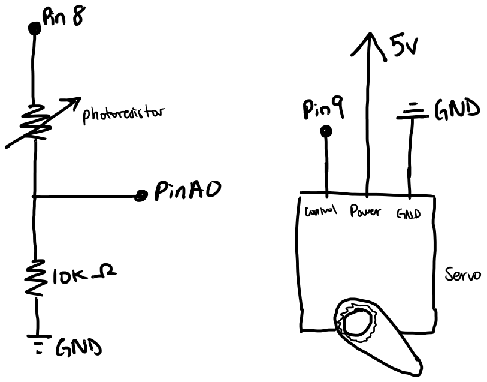
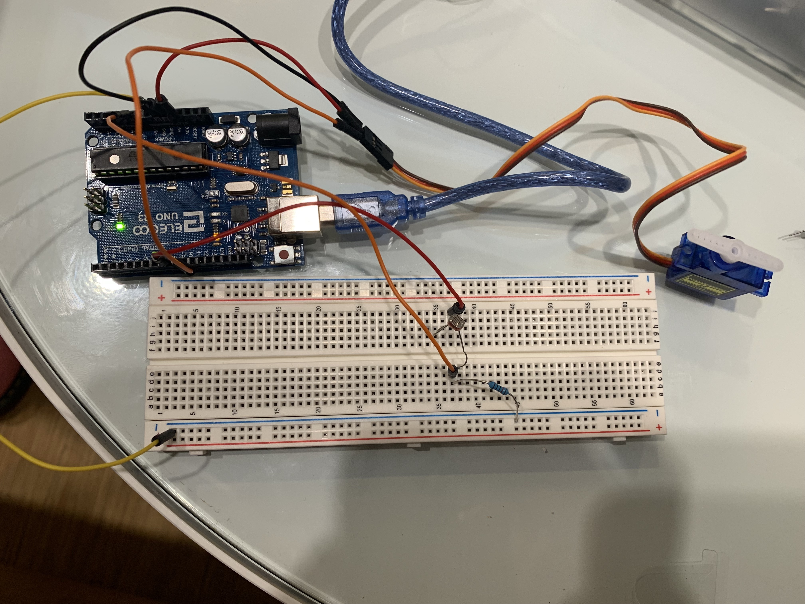

Anna's Assignment 4, : Libraries!

For this assignment, I had to use a input and output device, one of which using a library, to create something! I used a servo and a photoresistor to create a makeshift fan that spins between 0 and 180 degrees. it spins faster when it is bright (representing day and high temps), and slowly when its dark (representing night and low temps).
Schematic

Shown on the schematic are 6 pins on the arduino. These pins are 5V, A0, 8, 9, and two seperate grounds. There is also a servo. Pin 5V is an outputing pin and is connected to a photoresistor, inputting pin A0, a 10k ohm resistor, and ground in a voltage divider configuration. Pin 5V is an outputting pin and is connected to the servo. The servo is also connected to a ground pin and pin 9 that sends it signals indicating what position to have the servo in.
The schematic also shows the values of the resistor. For pin 8, I used a 10k ohm resistor on the other side of the voltage divider. This was based on the Adafruit Photocells informational document. As it described that higher resistance resistors would allow the photoresistor to be more sensitive to changes in low light, I decided to use a 10k ohm resistor as I am more able to control how dark the area is instead of how especially bright it is.
Code Snippet
#include // sets up the servo library to be used in this sketch
int sensorValue; // initializes the sensor value
int sensorMin; // initializes minimum sensor value
int sensorMax; // initializes maximum sensor value
int Vread = A0; // initializes the variable "Vread" to represent pin A0
int light;
int pos = 0; // initializes the variable "pos" to define the position of the servo
Servo myservo; // creates an instance of the servo to be defined as "myservo"
void setup() {
// method that sets up the arduino, ran once.
myservo.attach(9); // attaches the servo instance myservo to pin 9
sensorValue = 0; // the sensor value
sensorMin = 1023; // minimum sensor value
sensorMax = 0; // maximum sensor value
Serial.begin(9600);
// Calibration - sample code used from arduino built-in example "Calibration"
// determines the max and min expected values from a sensor (measured by Vread), so that unexpected circuit behavior is minimized.
// during calibration the user covers the sensor for a bit then allows the circuit to be exposed to the room lighting or a flashlight.
pinMode (8, OUTPUT); //initializes pin 8 to be an output pin
digitalWrite(8, HIGH); // sets the voltage output of pin 8 to high.
digitalWrite(13, HIGH); // turns the voltage level of pin 13 to high, turning on the built-in LED. Indicates calibration is in progress.
while (millis() < 5000) { // loops this section of the code during the first 5 seconds that the code is running.
sensorValue = analogRead(Vread); // reads the value of the pin that is measuring the voltage output of the circuit
Serial.println(sensorValue); // prints to the serial port the values being picked up by the sensor.
if (sensorValue > sensorMax) { // if the current value of sensorValue is bigger than sensorMax then it will run the following code
sensorMax = sensorValue; // records the current value of sensorValue as sensorMax.
}
if (sensorValue < sensorMin) { // if the current value of sensorValue is smaller than sensorMax then it will run the following code
sensorMin = sensorValue; // records the current value of sensorValue as sensorMin.
}
}
Serial.println("This is max"); // prints the phrase "This is max"
Serial.println(sensorMax); // prints the maximum value recorded during the calibration process.
Serial.println("This is min"); // prints the phrase "This is min"
Serial.println(sensorMin); // prints the minimum value recorded during the calibration process.
digitalWrite(13, LOW); //turns the voltage level of pin 13 to low, turning off the built-in LED. Indicates that calibration is over.
}
void loop() {
// method that runs main code continously repeating.
digitalWrite(8, HIGH); // sets the voltage output of pin 8 to high.
sensorValue = analogRead(Vread); // measures the voltage value of the pin corresponding to Vread
int sensVal = constrain(sensorValue, sensorMin, sensorMax); // restricts the values of the sensor to be between the max and min values recorded during calibration
int outVal = map(sensVal, sensorMin, sensorMax, 0, 255); // uses the map function to assign the possible values of voltage to values that can be assigned to LED.
//Serial.println(sensorValue);
//Serial.println(outVal);
// above is code for debugging: prints the values of sensorValue and outVal to serial port
if (outVal == 0 ) { // if outVal is 255, the following will be performed.
Serial.println("It's dark!"); // prints the phrase "It's dark!" to the serial port
} else if (outVal == 255) { // if outVal is 0, the following will be performed.
Serial.println("It's bright!"); // prints the phrase "It's bright!" to the serial port
} else { // if outVal is neither 0 nor 255, the following will be performed.
Serial.println("It's somewhere between dark and bright!"); // prints the phrase "It's somewhere between dark and bright!" to the serial port
}
int s; //initializes s variable, which will be the number of miliseconds the between each servo posiotn
if (outVal > 128){ //if outVal is above 128, the following will be performed
s = 2; //sets s variable to 2
} else { //if outVal is below or equal to 128, the following will be performed
s = 10; //sets s variable to 10
}
// adapted from arduino sample code "Sweep"
for (pos = 0; pos <= 180; pos += 1) { //repeats code 180 times, adding 1 to the pos variable each time
myservo.write(pos); // tells servo to go to the position of the pos variable
delay(s); // waits s ms before going to the next position
}
for (pos = 180; pos >= 0; pos -= 1) { //repeats code 180 times, adding 1 to the pos variable each time
myservo.write(pos); // tells servo to go to the position of the pos variable
delay(s); // waits s ms before going to the next position
}
}
This code is similar to the code I used for assignment 3, input and output.
My code includes a setup method which runs once and prepares the pins on the Arduino for use by designating them as outputs/inputs, and configures the sensor to read values for the area it is in. There is also a loop method which runs repeatedly and tells the pins to change voltage based on sensor values, changing the brightness of the red and blue LEDs.
Before the setup method, 5 variables are initialized. These variables are sensorValue, sensorMin, sensorMax, and Vread. The first three variables aid in determining the maximum value the sensor should read in the environment it’s in. The last variable defines a name for a variable that stores the position of the servo. The servo instance is also initialized as myservo. The servo library is also setup using #include
The setup method first sets up myservo to be attached to pin 9. Then it sets the sensorValue, sensorMin, and sensorMax variables to 0, the max, and the min readable values, respectfully. Then the serial port is set up to transmit data at 9600 bits per second. Then the pins used for the circuit are set up to be input and output pins. Pin 8 is turned on so the photoresistor will get 5V of power. The set up method also includes a calibration section. Sample code here is drawn from the “Calibration” Arduino example. It determines the maximum and minimum values recorded by the attached sensor (in this case a photoresists) over a time period (here, 5 seconds). I then added statements that print the max and min to the serial port for debugging purposes.
The loop method first sets pin 8 to output 5V of power, then it sets the sensorValue variable to read the Vread pin. It then uses the sensVal variable and the constrain method to restrict values that are used to ones that fit the range found in calibration. The map function is then used to map the values in sensVal to ones that can be used with LED, which are in the range of 0 to 255. The mapped value is set to outVal.
A phrase indicating whether it’s bright or dark will print to the serial port depending on outVal. If it's 255, it will print that it is bright, and if its 0 it will print that it is dark. If it’s not at max or min brightness, neither will light and the phrase “It's somewhere between dark and bright!” will print to the serial port.
Then the servo will be told how to spin. First, variable s will be assigned based on the value of outVal. If outVal is above 128, which means its brighter than it is dark, then s will be set to 2, meaning that the servo will spin faster. If outVal is under 128, which means its darker than it is bright, then s will be set to 10, meaning that the servo will spin slower. Portions of this code is sample code from the "Sweep" arduino example code.
Circuit Image and Operation GIF



The first image shows the circuit from above. The 1st gif shows the circuit behavior if the light sensed is high (above 128 in value). The second gif shows the circuit behavior if the light sensed is low (below 128 in value) according to calibration.
In this circuit there are 6 wires connected to the Arduino. One is connected each to pin 9, 8, 5V, and A0. Two are connected to seperate grounds.
For the servo, it is connected to the 5V pin, (coordinating to the red wire), pin 9 (orange wire), and ground (black/brown wire). For the photoresistor, the circuit is first connected to pin 8, providing it with 5v of power. Then it is connected to the photoresistor, then a wire connected to A0 for reading the values the sensor gives off. It is then connected to a 10k ohm resistor, then connected to the negative row of the breadboard and ground on the arduino.